1. 实验目的
熟悉网络协议栈的分层结构，掌握协议栈的数据结构定义；
了解以太网数据包捕获机制，熟悉数据包的收发过程；
熟悉数据链路层数据帧格式，掌握以太网数据帧的发送和接收处理过程。
2. 实验任务
在给定的协议栈代码框架上，编写以太网数据链路层数据帧的发送和接收函数，使其能够发送和接收数据帧，并且能通过实验评测系统的测试。
3. 实验原理
3.1. 协议栈框架简介
3.1.1. 协议栈结构
从本实验开始，我们就要自己动手构建一套自底向上包含但不限于以太网协议、ARP、IP、ICMP、UDP五种协议的网络协议栈。该协议栈基于TCP/IP协议模型，分为数据链路层、网络层、传输层和应用层四层结构。在这个协议栈中，数据包会经过层层封装，由上到下层。每个上层的数据包都会被下一层的包头所封装，而下层的包头会在其特定的字段中指明其上一层封装的是何种协议。值得注意的是，封装过程中原始的文件数据是保持不变的。
封装操作主要发生在发送方，它将数据从高层逐步向下层传递，每传递一层都会加上该层所需的包头信息。而拆封（还原操作）则发生在接收方，它按照协议栈的层次结构，逐层剥离包头，还原出原始的数据内容。
通过这样的封装和拆封过程，我们的协议栈能够确保数据在不同网络层次间正确、高效地传输，实现网络通信的目标。在接下来的实验中，我们将逐步构建这个协议栈，以便它能够支持实际的网络通信需求。
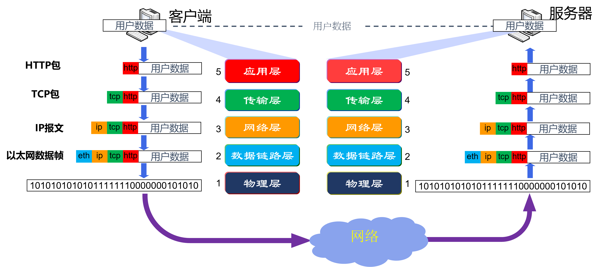由于每一层协议所加入的包头不一样，使得每一层的数据包结构也不一样，那么如何表示能够支持不同协议层的头部添加和移除的数据包结构呢？在实验中，我们提供了如下结构体定义数据包结构，主要代码见inculde/buf.h。
1 typedef struct buf //协议栈的通用数据包buffer, 可以在头部装卸数据，以供协议头的添加和去除
2 {
3 size_t len; // 包中有效数据大小
4 uint8_t *data; // 包的数据起始地址
5 uint8_t payload[BUF_MAX_LEN]; // 最大负载数据量
6 } buf_t;
7
8 int buf_init(buf_t *buf, size_t len); //初始化buffer为给定的长度，用于装载数据包
9 int buf_add_header(buf_t *buf, size_t len); //为buffer在头部增加一段长度，用于添加协议头
10 int buf_remove_header(buf_t *buf, size_t len); //为buffer在头部减少一段长度，去除协议头
11 int buf_add_padding(buf_t *buf, size_t len); //为buffer在尾部添加一段长度，填充0
12 int buf_remove_padding(buf_t *buf, size_t len); //为buffer在尾部减少一段长度，去除填充
为简化协议栈的实现，我们只要求能够满足单线程使用即可，故只需为本协议栈创建一个接收和一个发送的缓冲区就行，主要代码见src/net.c。
1/**
2 * @brief 网卡接收和发送缓冲区
3 *
4 */
5buf_t rxbuf, txbuf; //一个buf足够单线程使用
在buf_init()函数中，将buf->len设置为初始长度，buf->data指向payload空间长度为BUF_MAX_LEN的一半的地址。因此，将在这一空间的上半地址用于添加有效数据，下半地址用于添加填充pad。
注意
请思考，什么情况下需要在数据data后面填充0？
定义好的数据结构后，添加TCP/IP协议栈各层包头的过程只需要前移data指针，而移除包头的过程只需要后移data指针即可。
3.1.2. 网络数据包大端与小端
经过大学前两年的学习，同学们对大端和小端字节序的概念及其由来应该已经有了深入的理解。这两种字节序在数据存储时呈现出明显的差异。在小端字节序中，最低有效字节被存储在内存的低地址处，而最高有效字节则被存储在内存的高地址处。相反，在大端字节序中，最高有效字节被存储在内存的低地址处，而最低有效字节则被存储在内存的高地址处。这两种字节序对于跨平台或跨网络的数据传输和解析至关重要，因此，在实际应用中需要特别注意。
以long型数据0x12345678为例，其在小端字节序和大端字节序下的存储方式如下：
地址 |
数据 |
|---|---|
0x0000 0100 |
0x78 |
0x0000 0101 |
0x56 |
0x0000 0102 |
0x34 |
0x0000 0103 |
0x12 |
地址 |
数据 |
|---|---|
0x0000 0100 |
0x12 |
0x0000 0101 |
0x34 |
0x0000 0102 |
0x56 |
0x0000 0103 |
0x78 |
网络上传输的数据都是字节流，对于一个多字节数值，在进行网络传输的时候，先传递哪个字节？按照TCP/IP协议规定：网络字节序是大端字节序。但是，X86平台上是以小端字节序存储，也就是，在发送之前我们需要将小端存储的字节序转换成大端法存储的数值，而在接收时，也需要将大端序转成小端序存放的数值。
在实验代码中，我们提供了16bit（2个字节）的大小端转换宏定义：
1#define swap16(x) ((((x)&0xFF) << 8) | (((x) >> 8) & 0xFF)) //为16位数据交换大小端
3.1.3. 结构体内部字段对齐问题
结构体对齐问题也是老生常谈的话题，其背后的原因涉及到对内存使用的优化，以及确保数据访问的效率。在大多数计算机体系结构中，数据访问通常按照特定的字长（如32位或64位）进行对齐。结构体（struct）作为复合数据类型，其成员可以是基本数据类型（如int、long、float等），也可以是其他复合数据类型（如数组、结构体、联合体等）。
在默认情况下，编译器会根据结构体的每个成员的自然对齐条件来分配内存空间，这是为了提高数据访问和运算的效率。自然对齐，也称为默认对齐方式，通常是根据结构体成员中最大尺寸的成员来确定对齐边界。这意味着，即使某些成员的实际大小小于对齐边界，编译器也可能在它们之间插入填充字节，以确保整个结构体满足对齐要求。
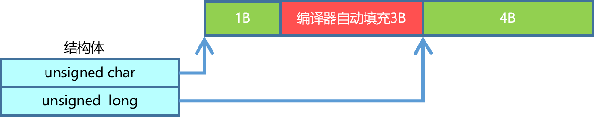网络传输是字节流传输，但是当发生结构体对齐时，编译器会自动加入填充字节，这样发送出去的字节流某些字段会指向错误的地方，因此，在实验中，我们需要禁用结构体内部字段的对齐。
在实验代码中，可以使用伪指令pack(n)，编译器将按照n个字节对齐。注意：如果指定的n大于结构体最大成员的size，则其不起作用，结构体仍然按照size最大的成员进行对齐。
1#pragma pack(1) // 编译器将按照1个字节对齐
2
3 typedef struct ether_hdr
4 {
5 uint8_t dst[NET_MAC_LEN]; // 目标mac地址
6 uint8_t src[NET_MAC_LEN]; // 源mac地址
7 uint16_t protocol16; // 协议/长度
8 } ether_hdr_t;
9 #pragma pack() // 取消自定义字节对齐方式
3.1.4. Map的使用
本实验框架采用灵活的指针操作，构建了一个泛型键值对容器，该容器不仅支持超时时间的设定，还能够容纳非平凡值类型。为了提供便捷的操作体验，我们提供了基础的get、set、delete以及foreach原语。此外，通过巧妙地运用map数据结构，我们实现了协议的动态注册机制，有效地解耦了上下层协议之间的依赖关系。这意味着在编写底层协议时，上层协议可以独立存在，无需提前定义或实现。我们期望这一框架能够简化同学们的编码过程，提升代码的复用性和可维护性，帮助同学们轻松应对各种类型和协议的需求。
主要代码见inculde/map.h、src/map.c。
1 typedef void (*map_constuctor_t)(void *dst, const void *src, size_t len);
2 typedef void (*map_entry_handler_t)(void *key, void *value, time_t *timestamp);
3
4 typedef struct map //协议栈的通用泛型map，即键值对的容器，支持超时时间与非平凡值类型
5 {
6 size_t key_len; //键的长度
7 size_t value_len; //值的长度
8 size_t size; //当前大小
9 size_t max_size; //最大容量
10 time_t timeout; //超时时间，0为永不超时
11 map_constuctor_t value_constuctor; //形如memcpy的值构造函数，用于拷贝非平凡数据结构到容器中，如buf_copy
12 uint8_t data[MAP_MAX_LEN]; //数据
13 } map_t;
其中每个数据项（data）都包含键（key）、值（value）和时间戳（time）。时间戳记录了键值对插入容器时的时间值，用于判断键值对是否已超时。这种设计允许我们在保证数据有效性的同时，实现超时控制，确保容器中的数据始终保持在最新状态。
{kind=link}
备注
在本协议栈中，由于需要处理的协议或数据量相对较少，采用map作为协议动态注册机制的数据结构是合理的。map的遍历方式在这种情况下是可行的，因为它能够提供基于键的快速查找和插入操作。然而，如果协议栈需要处理大量的数据，或者对检索性能有更高的要求，那么可以考虑使用更高效的数据结构来优化查找性能，比如平衡二叉树（如红黑树）和哈希表（hash map）。
在实现这些数据结构时，可以参考STL标准模板库（Standard Template Library），它提供了丰富的容器和算法，包括map、set、unordered_map和unordered_set等，这些容器在内部实现了平衡二叉树和哈希表等数据结构。通过使用STL库，可以方便快捷地实现高效的数据存储和检索。
需要注意的是，在选择数据结构时，还需要考虑其他因素，如内存使用、数据分布和插入/删除操作的频率等。因此，在实际应用中，应根据具体场景和需求来选择最适合的数据结构。
3.2. 以太网数据包捕获机制
以太网数据包常规的传输路径依次为网卡、设备驱动层、操作系统内置的网络协议栈。网络协议栈包含有数据链路层、IP 层、传输层、应用层。那么，在不修改设备驱动层和操作系统内置的协议栈的情况下，如何获取到来自设备驱动层的数据帧呢？
值得庆幸的是，现代操作系统一般提供有用于捕获网络流程的pcap（packet capture）应用程序编程接口。这一强大的工具为网络流量捕获提供了标准化的接口，使得用户空间程序能够轻松地接收和解析网络数据包。
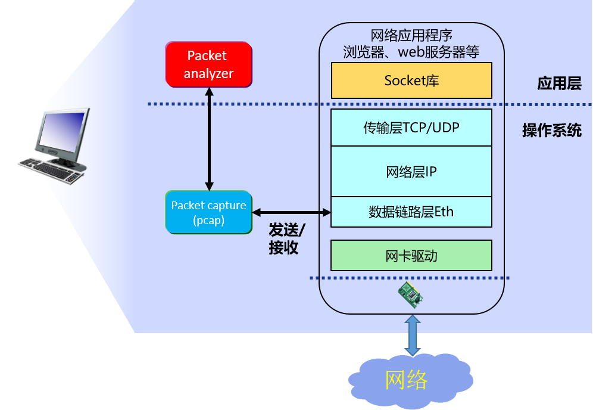在本实验中，我们已经对pcap库函数进行底层封装，我们直接使用以下几个函数即可实现从网卡接收或发送数据包，详见include/dirver.h、src/dirver.c。
为了有效地捕获数据包，我们首先需要初始化pcap库，确保其与系统环境兼容。接着，通过调用适当的函数（如pcap_findalldevs()），我们可以识别并选择相应的网络接口设备。一旦设备选定，我们就可以使用pcap_open_live()打开该设备，并设置相应的参数，如捕获模式、超时时间和数据包的最大长度。
为了提高效率，我们通常会设置一个BPF（Berkeley Packet Filter）过滤器，通过pcap_compile()和pcap_setfilter()函数，确保只有符合特定规则的数据包被捕获。这样，我们可以精确地定位并获取所需的数据。
在数据包捕获过程中，pcap_next_ex()函数扮演着关键角色。它们允许我们持续监听并接收数据包，这样，我们可以深入分析数据包的各个部分，提取出所需的信息。
完成数据包捕获后，使用pcap_close()关闭设备。
值得一提的是，为了使用pcap库，我们可能需要在系统上安装相应的库文件（Npcap）。同时，由于捕获网络数据包通常需要较高的权限，因此请确保以管理员或root身份运行捕获程序。
通过合理利用pcap库，我们可以在不修改底层系统组件的情况下，轻松地获取到设备驱动层的数据帧，为网络分析和调试提供了极大的便利。
/**
* @brief 打开网卡
*
* @return int 成功为0，失败为-1
*/
int driver_open();
/**
* @brief 试图从网卡接收数据包
*
* @param buf 收到的数据包
* @return int 数据包的长度，未收到为0，错误为-1
*/
int driver_recv(buf_t *buf);
/**
* @brief 使用网卡发送一个数据包
*
* @param buf 要发送的数据包
* @return int 成功为0，失败为-1
*/
int driver_send(buf_t *buf);
/**
* @brief 关闭网卡
*
*/
void driver_close();
3.3. 以太网数据帧格式
从上一节的介绍中，我们可知利用driver_recv()函数可以接收到以太网数据链路层的数据帧，那么数据帧的格式是什么样的？
来自物理线路的二进制数据包称作一个帧。以太网链路传输的数据帧称为以太帧，或者以太网数据帧。
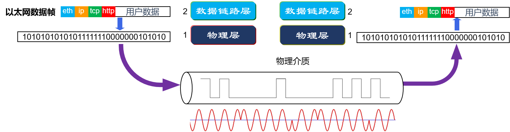提示
如上图所示，物理层用于完成二进制数列与信号的转换，转换方法取决于设备本身的配置，没有固定的协议。物理层因其与其他层的性质不同，有时被当作数据链路层的一部分看待，有时被认为不属于TCP/IP的层。在本实验中，不涉及到物理层的实现。
下图是在网线上传输的数据包。其中报头/起始帧分界符、FCS（Frame Check Sequence，帧校验序列）是由网卡设备负责的部分。我们只需要关注MAC头部、IP头部、TCP/UDP头部、数据即可。
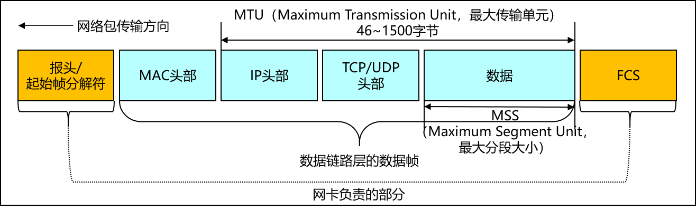去除报头和FCS，剩余的部分是数据链路层的数据帧，其帧格式如下图所示。
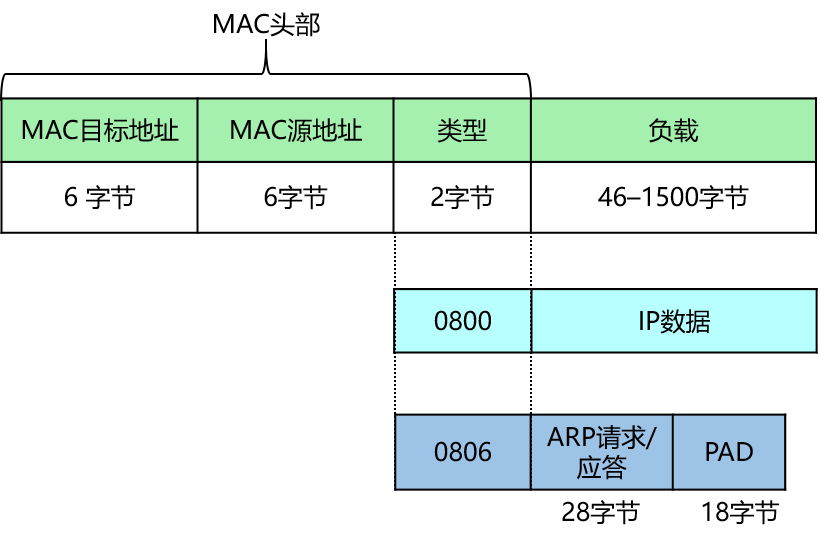{kind=link}
MAC目标地址 ：接收帧的网络适配器的物理地址（MAC地址），6个字节。当网卡接收到一个数据帧时，首先会检查该帧的目的地址，如果与当前适配器的物理地址相同，或者帧的目的地址为广播地址（FF-FF-FF-FF-FF-FF），就会进一步处理；否，则直接丢弃。
MAC源地址 ：发送帧的网络适配器的物理地址，6个字节。
长度/类型 ：当该值在0x05DC（10进制数为1500）以下时，表示该以太网数据帧的长度；在0x0600以上时，则表示上层协议的类型，2个字节，标识数据交付哪个协议处理。例如，字段为0x0800时，表示将数据交付给IP协议。字段为0806时，表示该数据帧时ARP请求/应答报文。
更多的以太网数据帧、IP协议报文格式和ARP报文格式的详细资料请参考Internet工程任务组（IETF）提供的官方标准文档 RFC0894 、 RFC0791 和 RFC0826 。
4. 代码实现与检测
请同学们认真阅读本实验提供的代码框架，并补充完整 src/ethernet.c 文件中的 ethernet_out()函数和ethernet_in()函数。
4.1. 以太网数据帧发送处理流程（ethernet_out()函数）
Step1 ：首先判断数据长度，如果不足46则显式填充0，填充可以调用buf_add_padding()函数来实现。
Step2 ：调用buf_add_header()函数添加以太网包头。
可参考以下写法：
buf_add_header(buf, sizeof(ether_hdr_t));
ether_hdr_t *hdr = (ether_hdr_t *)buf->data;
Step3 ：填写目的MAC地址。
Step4 ：填写源MAC地址，即本机的MAC地址。
Step5 ：填写协议类型 protocol。
Step6 ：调用驱动层封装好的driver_send()发送函数，将添加了以太网包头的数据帧发送到驱动层。
4.2. 以太网数据帧接收处理流程（ethernet_in()函数）
Step1 ：首先判断数据长度，如果数据长度小于以太网头部长度，则认为数据包不完整，丢弃不处理。
Step2 ：调用buf_remove_header()函数移除加以太网包头。
Step3 ：调用net_in()函数向上层传递数据包。
4.3. 实验自测
为了帮助大家更好地理解和掌握每一层协议的工作原理，本实验提供了自测程序。通过自测程序，你们可以在实际操作中加深对协议的理解，并检验自己的实验结果。
在进行实验自测之前，请确保你已经成功搭建了Windows或Linux的开发环境。详细的搭建步骤请参考附录B Windows开发环境搭建 或附录B Linux开发环境搭建。这些指南将指导你完成必要的软件安装和配置，确保你的开发环境能够支持后续的实验自测。
下面将以Windows开发环境为例，介绍如何进行实验自测。如果你使用的是Linux环境，也可以通过VSCode远程调试来完成实验自测，操作步骤与Windows环境下类似。
4.3.1. ethernet_in()函数测试
点击CMake工具栏，找到eth_in[eth_in.exe]，右键，选择“生成”进行编译。
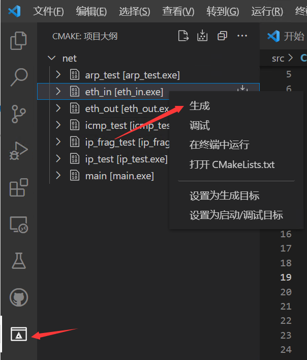{kind=link}
接着，打开VSCode的终端，到build目录下，输入ctest -R eth_in
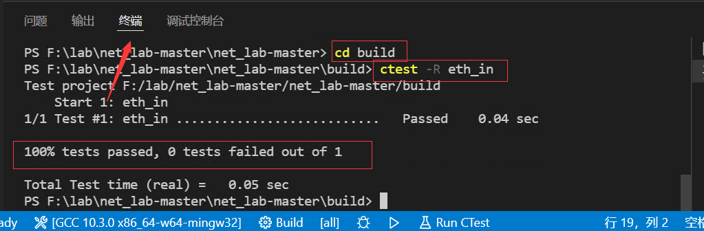如果显示100% test passed（如上图所示），则说明ethernet_in()函数的接收处理流程是正确的。否则，说明接收处理失败。
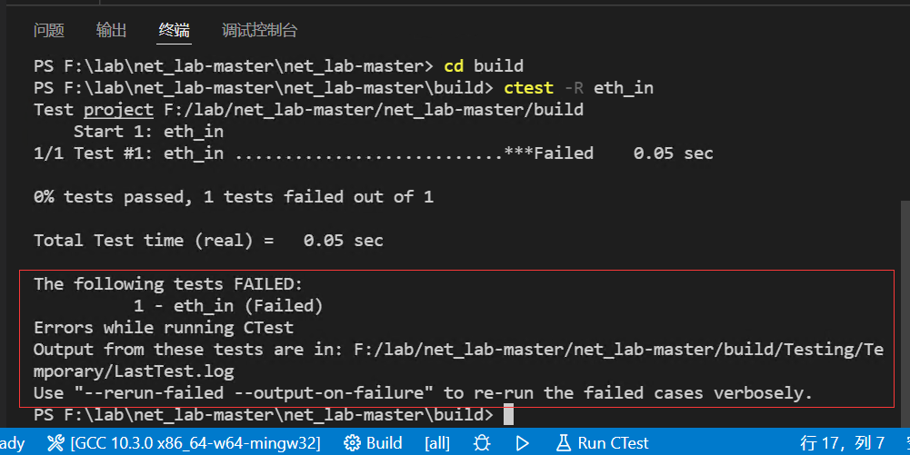如上图所示，提示测试有错误。
此时，可以输入ctest –output-on-failure显示未通过测试的控制台输出，该命令会运行所有测试。
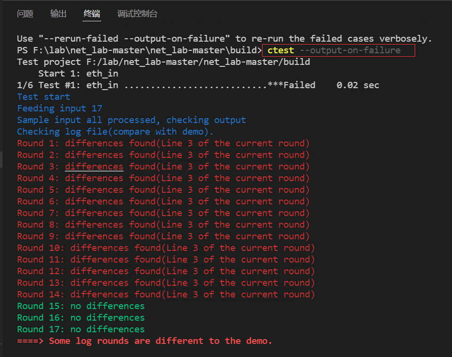{kind=link}
提示
ctest用法
ctest ： 运行所有测试
ctest -N ： 列出所有测试
ctest -R 测试名 ： 运行指定测试
ctest -R 测试名 -V ： 运行指定程序，并显示测试控制台输出
ctest –output-on-failure ： 运行所有测试，仅显示未通过测试的控制台输出
ctest -N -V ： 列出测试及其运行命令（用于gdb）
从上图可以看到在eth_in测试中，提示”Some log rounds are different to the demo“。
接着，我们可以查看一下是哪些log不一样。在VSCode工程目录下，将testing/eth_in目录下的demo_log和log这两个文件进行比对。
按下Ctrl键，选择demo_log和log这两个文件，再点击右键，选择“将已选项进行比较”
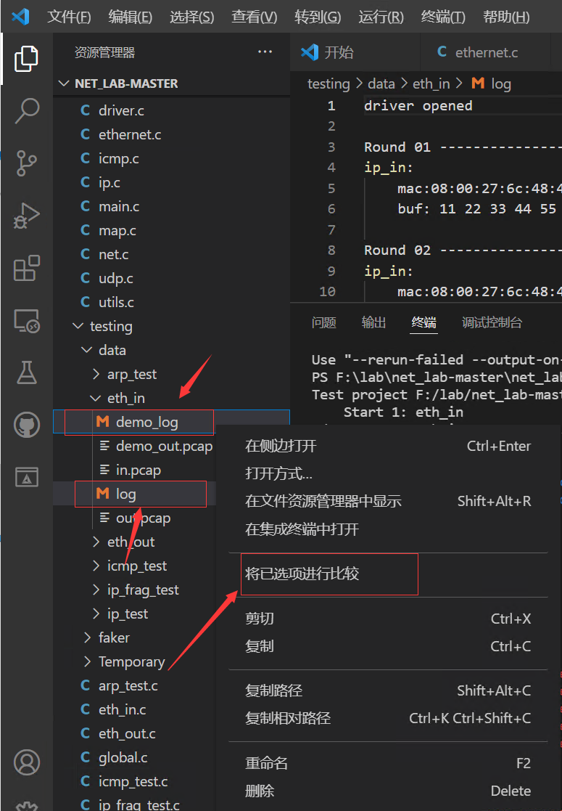{kind=link}
如下图所示，通过对比查看 log 和 demo_log 文件，可以看到 log 文件中数据报头部多出了一些数据（用此方法可以看出 ethernet_in()函数处理错误）
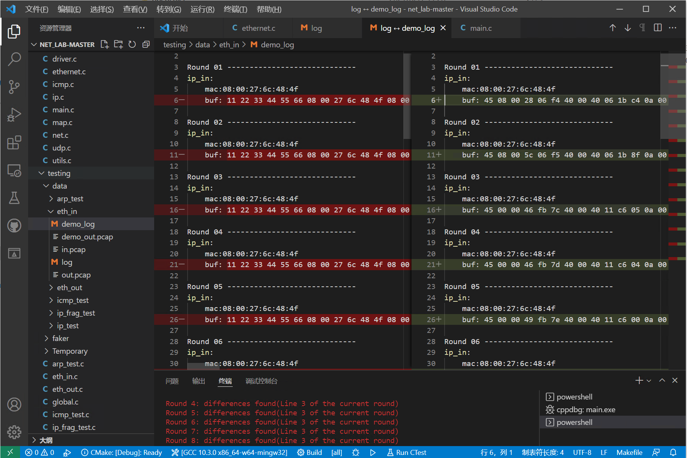备注
如果提示.pcap文件不一致，可以用wireshark软件打开查看.pcap文件。wireshark用法可参考 附录 A：Wireshark 入门 。
4.3.2. ethernet_out()函数测试
点击CMake工具栏，找到eth_out[eth_out.exe]，右键，选择“生成”进行编译。
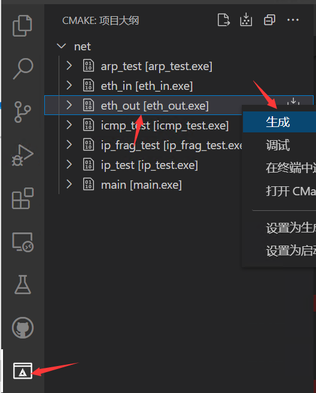{kind=link}
与上述eth_in的测试一样，打开VSCode的终端，到build目录下，输入ctest -R eth_out即可进行测试。
如果提示失败，也可以参考上述排错方法来找bug。
4.3.3. GDB调试
本实验支持使用GDB调试，请参考 Windows开发环境搭建 中的“Windows下编译和调试”
5. 实验提交
本实验提交 实验设计报告 和 实验代码 。
5.1. 实验设计报告
实验设计报告要求写出实验设计思路和运行结果 。
实验设计报告会纳入评分（虽然不多），有分数追求的大佬（juanwang）们不要只放代码和指导书的截图。
5.2. 实验代码
不需要提交整个实验代码包，只需 提交你所修改过的代码 即可。